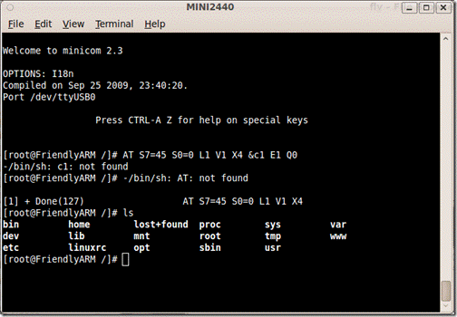
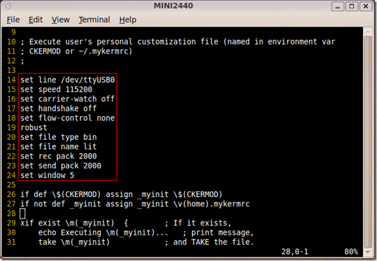

ITEEDU
构建PXA270-s开发板ubuntu的开发环境
————串口配置及使用（2）
（4）最后Save setup as dfl并退出，再次输入minicom命令，可以看到已经成功的连到了PXA270-s开发板，如图4所示。

图4 利用minicom连接开发板成功
至此，我们已经安装minicom并且配置 成功，可以使用minicom了。 下面一节介绍Kermit的安装及使用。
4.Kermit的安装及使用
（1）minicom是最常用的串口软件，但是它并不是很稳定，所以Uboot的官方文档上并不推荐使用minicom，而推荐kermit（这里使用 ckermit版本），这一节就是介绍kermit的使用。kermit并不是Ubuntu默认安装，我们可以使用sudo apt-get install ckermit来安装kermit。
(2)安装kermit完成以后，在使用kermit 以前，还需要对kermit进行一些设置。vi /etc/kermit/kermrc, 增加如下配置选项，如图5所示：
图5 kermit参数配置
（3）至此我们已经顺利配置好kermit了，在 terminal上输入kermit命令，进入到kermit程序，然后输入connect，连到串口，如图6所示：

图6 利用kermit连接开发板成功
（4）这样我们就已经顺利连接到pxa270-s开发板了，如果需要切换回kermit，按Ctrl + \, 再按c就可以可以跳回：C-Kermit>。此时输入c,即connect即可连接到串口。
（5）可以利用kermit发送文件。kermit中输入connect后,转入了u-boot串口界面。
输入loadb 0x00300000,启动开发板上的kermit协议。
按下 Ctrl + \, 再按c, 切换到kermit。
C-Kermit> send /home/share/uImage.pkg
kermit开始传送，并且显示一个传送界面，并动态显示传送进度。
传送完毕后，输入c，即connect命令，回到u-boot的串口界面。
使用u-boot命令，启动内核。
等下载完毕后再关闭这个终端窗口，重新开一个终端，然后kermit -c这时候在用cp.b dest src len拷贝程序到flash中。